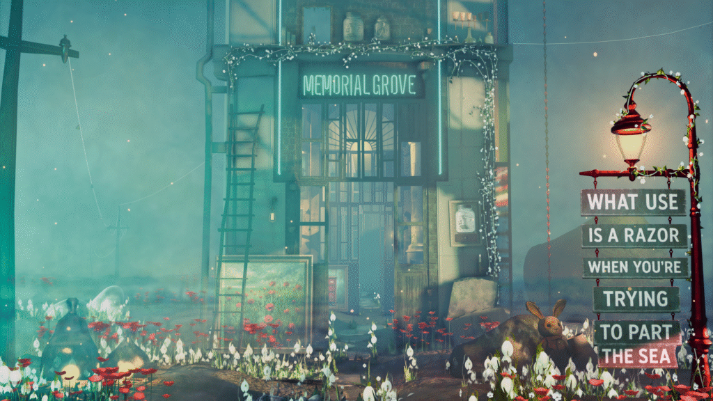

In a realm where looming Theaters lure travelers inside, trapping them in the play of yet another lifetime, Aril stands with this sought-after invitation.
All she needs to do is let Inky lead the way to an ancient tree tucked away in the very corner of a theater, said to mark the gate between Eternalmoor and beyond.

But to reach that tree, she must first navigate another clusterfuck of a lifetime.
As it turns out, being guided by a heart-spirit is like babysitting chaos, hoping for a pindrop of clarity. Inky seems far more interested in exploring the journey than guiding Aril to the end.
Character Sprite / Art Placeholder
Gameplay / UI Graphic Placeholder
You follow her on this quest—as a helping hand, a companion, and a conversational partner as the three of you explore the gritty allure of simply being. Together, you will gather experiences and traits, balancing the horrors of life against its wonders.